|
Ed
Edward
Fox junior -
Landscape
and Architectural Photographer
Edward
Fox junior was exceptional amongst Brighton photographers
in that he devoted himself almost exclusively to photographing
landscapes and buildings.He worked as a photographer in Brighton
for nearly 50 years,recording the seafront, private and public
buildings, churches,the streets of the town and views of the
surrounding countryside. He was among the handful of photographers
active in Brighton who has achieved recognition nationally
for his talents as a photographer.
(RIGHT)Although
Edward Fox had been taking views and landscape photographs
since 1851, he did not advertise as a professional
photographer until 1862. This full page advertisement from
H.& C. Treacher's Advertising Sheet of 1867 (RIGHT)
details the type of photographic work Fox carried out in the
1860s.
|
1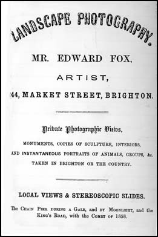
Advertisement for Edward
Fox 's Landscape Photography in Treacher's Guide of 1867
|
Edward Fox was the eldest
son of Edward Fox senior ( born 1788, London - died 1875), an artist
and landscape painter, and Sarah Fox, a milliner, (born c.1792 Horsham,
Sussex, died before 1871)
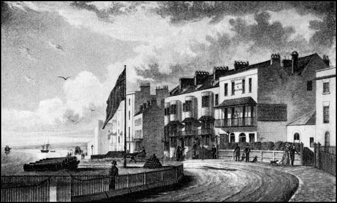
The
West Battery, Kings Road. An engraving taken from a drawing by Edward
Fox senior (c1830)
Edward Fox senior - Landscape Artist in Brighton
Edward
Fox senior, was active as an artist in Brighton before 1815. Brighton
Museum & Art Gallery has a watercolour of 'Brighton Beach and
Sea Front' by Edward Fox senior, which carries the date 1814. In Baxter's
Directory of 1822, Edward Fox is listed as a Drawing Master at 55
Ship Street. On 12th May 1822, Edward Fox, artist, married Sarah Caven,
spinster. Edward, the couple's first child was born the following
year at Edward Fox's house in Ship Street, Brighton. Edward Fox
junior was baptised at St Nicholas Church, Brighton on 23rd April
1823. A second son, John was born at the Fox family's new residence
at 3 Brighton Place in October 1824. (The house in Brighton Place
had previously belonged to the Caven family). Edward Fox senior is
listed as an artist at 3 Brighton Place in Brighton street directories
up until 1843. During this period, Edward Fox, senior, produced a
number of paintings of Brighton and the surrounding area. He made
several watercolours of Brighton Beach and distinctive Brighton buildings
such as the Royal Pavilion and the famous Seawater Baths in Pool Valley.
Edward Fox senior mainly worked in watercolour, but he did produce
a few oil paintings on canvas. Fox's oil paintings include a View
of Brighton from Race Hill and one of Market Street in the old centre
of Brighton.
Market Street was close to Fox's house in Brighton Place and ran alongside
Brighton's popular landmark The Lanes.
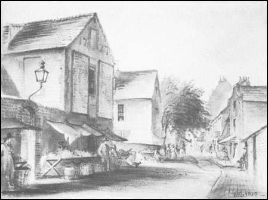
Market
Street from Bartholomews by Edward Fox senior . A drawing signed and
dated 1823.The old gabled building on the left marked '1727' was used
as a workhouse, but because meetings were held in this building it
was known as 'The Old Town Hall'.This old building was demolished
soon after Edward Fox senior made this drawing. Edward Fox senior
and his family lived at the top end of Market Street.
Around 1845, Edward Fox,
senior, with his wife and five sons set up home at 44 Market Street,
an attractive house with mathematical tiled front and bow windows,
which to this day stands alongside The Pump House tavern. In Leppard's
1845 Directory of Brighton, Edward Fox, senior is listed as 'Decorative
Painter and Artist' of 44 Market Street. Edward Fox junior must have
shown artistic talent, for he was soon assisting his father as a decorative
painter. In the 1851 Census, Edward Fox junior's father is described
as 'Artist-Landscape Painter', aged 62. Mrs Fox's occupation is give
as 'Milliner' and two of her sons are working as artists. Edward Fox
junior is listed as a 'Decorative Painter' aged 28 and his 22 year
old brother Charles Fox is described as a sculptor. In an 1852 Directory,
Edward Fox of 44 Market Street Brighton is listed as a "Transparent
Blind Maker."
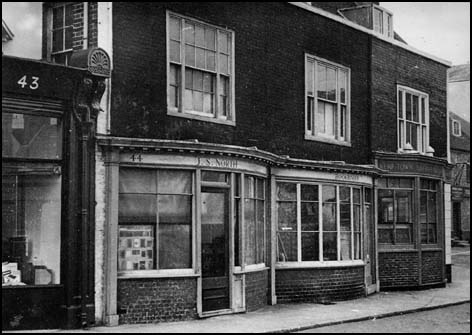
44 Market Street and the adjoining Pump House Tavern. When this photograph
was taken in the early 1950s, No 44 was occupied by J. S. North, Bookbinder.
The Fox family lived at 44 Market Street from about 1845.Edward Fox
junior worked from this building as a photographer for nearly 50 years.
Edward
Fox junior as a Photographer (1851-1861)
Edward Fox junior
is first listed as a professional photographer in the Professions
and Trades Section of Folthorp's 1862 Directory for Brighton, yet
there is evidence that by this date he had been taking photographs
for over ten years. An advertisement for Edward Fox's 'Landscape Photography'
published in the Brighton Examiner of 1867, states he was established
as a photographer at 44 Market Street in 1851. A later advertisement
which appeared in Page's 1885 Directory included the statement "Edward
Fox has given his whole attention to Out-Door Photography since 1851."
It is highly likely that a photograph of the neighbouring shops at
Nos 42 and 43 Market Street, dating from around 1851, was taken by
Edward Fox junior. [ see illustration in The History of Photography
in Brighton section of this website ].
A town guide, published by H & C Treacher in 1867, carried a full
page advertisement under the heading 'LANDSCAPE PHOTOGRAPHY - MR.
EDWARD FOX, ARTIST, - 44, MARKET STREET, BRIGHTON' in which the photographer
gave details of his 'Local Views & Stereoscopic Slides', including
an item with the title "King's Road, with the Comet of 1858."
On the 29th October 1860, The Brighton Art Society held a 'Conversazione'
at the Royal Pavilion, which featured an exhibition of " works
of art, photography and objects of interest." A review of the
exhibition which appeared in a Brighton newspaper later that week,
singled out for praise the photographic work of the artist "Mr
E. Fox - whose landscapes were excellent."
When the Census was taken on 7th April 1861, the unmarried 38 year
old Edward Fox junior was still living with his parents at 44 Market
Street. Edward Fox senior, the Head of the Household, is described
as an "Artist, Painter" aged 73. Edward Fox junior gave
his occupation as "Artist, Designer & Photographer."
All the other sons had left the family home, but Edward's younger
brother, John Fox, a "commission agent", was visiting his
parents at the time of the census.
Edward Fox senior carried on as a landscape artist up until his death
in 1875. At the Brighton Art Exhibition of 1861, the 73 year old painter
showed three sketches, including one called "Waiting for the
Boat." In Brighton Directory listings, Edward Fox senior continued
to advertise his services under the name of Edward Fox and Son, Artists,
at 44 Market Street up until 1874, the year before his death. No doubt,
Edward Fox junior assisted his elderly father with decorative art
projects in the 1860s and early 1870s, but advertisements indicate
that his main occupation during this period was as a Landscape and
Architectural Photographer.
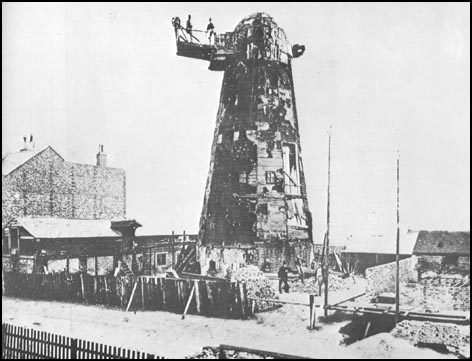
Hodson's
Black Mill on West Hill Road, Brighton, photographed by Edward Fox
on 25 June 1866,the day of the mill's demolition
Edward Fox junior- Landscape and Architectural Photographer
(1862-1874)
In
Folthorp's General Directory for Brighton, Hove & Cliftonville,
which had been corrected to May 1862, eighteen professional photographic
studios are listed. Nearly all the photographic artists listed specialised
in portrait work. Of all the photographers listed, only Edward Fox
junior described himself purely and simply as a landscape photographer.
Every single advertisement placed by Edward Fox was headed with the
words 'Landscape Photography.' The texts of these advertisements detailed
the type of work that Fox the photographer carried out - "Private
Photographic Views, Monuments, Copies of Sculpture, Interiors, Architecture,
Copying, and Instantaneous Portraits of Animals, Groups etc taken
in Brighton or the Country." Unlike all the other Brighton photographers
of this time. Fox never offers to take a studio portrait of an individual
person. It appears that the only portrait he is prepared to take is
that of a favourite or prized animal. People are only taken as part
of a large group outside of the studio. In addition to his private
commissions taken in Brighton and the surrounding countryside , Fox
offered for sale "Local Views & Stereoscopic Slides",
with titles such "The Chain Pier During a Gale" and "The
Chain Pier by Moonlight." In an 1867 advertisement, which appeared
in the 'Brighton Examiner' newspaper, Edward Fox of 44 Market Street,
Brighton advised readers that "Fox's local views, panorama of
Brighton etc." could be purchased from "principal stationers."
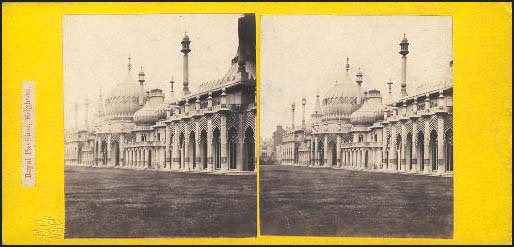
Stereocard of Brighton's Royal
Pavilion by Edward Fox (c1865)
In
the 1860s and early 1870s, the majority of Brighton's photographic
studios relied on the production of carte de visite portraits. In
contrast, Edward Fox's cartes de visite featured the interiors and
exteriors of Sussex Churches and other important local buildings.
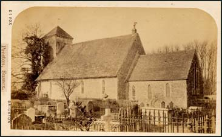
Carte de visite views by Edward
Fox. [ABOVE]
Preston Church near Brighton [BELOW]
Hove Church , Sussex (c1870)
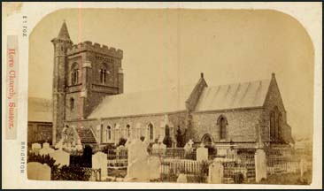
Edward
Fox's blind stamp identified him as a "Landscape and Architectural
Photographer." Several Brighton photographers in the 1860s and
1870s took views as well as portraits.W H Mason junior issued
his photographs of famous Brighton landmarks, such as the Grand Hotel,
in carte de visite format, but he rarely ventured out of town. The
Brighton photographer George Cassinello, produced cartes that
featured famous Sussex buildings and William Lane of Queens'
Road,Brighton photographed a number of views of the Swiss Gardens
at Shoreham, but these photographers relied on portraits for the bulk
of their business. Charles Nathaniel Wootton, who arrived in
Brighton from Cambridge in 1868, advertised 'Landscape & General
Photography,' but it is clear from his advertisements that his main
concern was the production of carte-de-visite portraits, which sold
at "7s 6d per dozen".
Edward
Fox junior was almost unique in the Brighton of the 1860s in describing
himself as a " Landscape and Architectural Photographer."
Nicola Cassinello, who for a short time had a studio at 9 Edward
Street, Brighton, produced cartes that mainly featured buildings and
views and John Harrington who was based at 27 St James Street,
Brighton in 1868, was described as "the eminent Architectural
Photographer" and was noted for his photographic views of churches
and cathedrals, but their presence in Brighton was brief and never
seriously challenged Edward Fox junior's position as the leading landscape
and architectural photographer in Brighton in the 1860s and early
1870s.
Edward
Fox junior: Artist in Photography
Edward
Fox junior, as the son of a respected landscape painter, was likely
to regard himself primarily as an artist, rather than an ordinary
commercial photographer. In the 1861 Census, Edward Fox junior gave
his profession as "Artist, Designer and Photographer." Fox's
advertisements in the 1860s, 1870s and 1880s generally introduced
the proprietor of 44 Market Street as ' Edward Fox - Artist ,' rather
than the commonplace ' photographer '.
By
styling himself as a "Landscape Photographer," Fox distanced
himself from the businessmen who had opened photographic studios to
cater for the popular demand for photographic portraits. Edward Fox,
it seems, did not views the practice of photography as simply a commercial
activity.
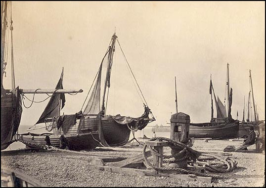
Fishing Boats on Brighton Beach
by Edward Fox [COURTESY OF STEVEN EVANS]
Edward
Fox junior was among the few Brighton photographers who looked upon
photography as an art form, regularly submitting his work to be displayed
in London art galleries. Edward Fox made his living from private commissions
to record a proud owner's horse, grand residence or recently acquired
sculpture, but the work he displayed,for example, at the Photographic
Society's annual exhibitions, reflect the concerns of a landscape
artist. From the descriptions of the work shown by Fox at various
exhibitions, it seems clear that they had artistic purpose and were
not drawn from his stock of commercial commissions. In June 1866,
for example, Fox exhibited "studies of trees in and out of leaf."
Later advertisements and notices in the press refer to "Land
& Sea Studies" "Forest Trees in Winter and Summer."
and "Cloud & Sea Studies." By the late 1870s, Fox came
to realize the commercial possibilities of his artistic photographs
which featured trees, clouds, and sea and was offering these prints
as "Studies for Artists."
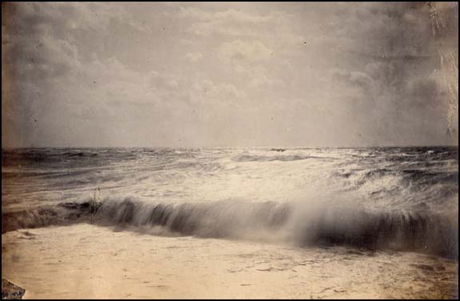
Cloud and Sea Study. Attributed
to Edward Fox [COURTESY OF STEVEN EVANS]
Edward
Fox was affiliated to the Photographic Society of Great Britain and
showed his work regularly at the annual exhibitions organised by the
Photographic Society. Fox first displayed his landscapes at the Photographic
Society's Exhibition on 10th January 1863. He went on to show photographs
at most of the Society's exhibitions held in London over the next
twenty years. The last Photographic Society show he took part in was
the 29th Annual Exhibition held at the Society's gallery in Pall Mall,
London in the Autumn of 1884.
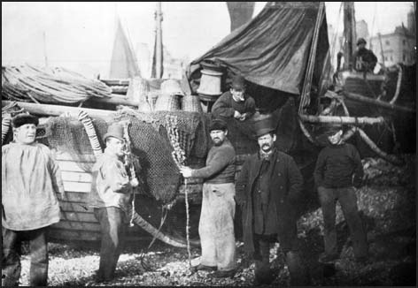
Fishermen on Brighton Beach
by Edward Fox (1871)
Private
Life and Public Records 1875-1891
Edward
Fox junior's mother died some time before 1871. When the 1871 Census
was taken on 2nd April 1871, Edward Fox senior was recorded as an
"Artist Painter", a widower aged 82, living at 44 Market
Street with his eldest son Edward, a 48 year old bachelor. In 1875,
Edward Fox senior, a landscape artist who had recorded Brighton's
streets, buildings and sea-front for a period of sixty years, passed
away. However, a notice in a Sussex newspaper indicates that Edward
Fox was not living alone at 44 Market Street after his father's death.
In 1875, an advertisement for Edward Fox's Landscape Photography in
the "Hastings Independent" provides evidence that Fox's
premises at 44 Market Street was being shared by a Miss Weekes, who
modelled "wax flowers from Nature." No longer a confirmed
bachelor, Edward Fox married Miss Sarah Ann Weekes at St Peter's Church
Brighton on 27th October 1875. Sarah Weekes, who was born in Brighton
in 1843, was twenty years younger than Edward Fox. When the next advertisement
for Edward Fox's Landscape Photography appeared, a notice was attached
to the bottom of the display, announcing "Wax Flowers from Nature,
by Mrs Edward Fox (Miss Weekes) - specimens on view. Lessons given."
|
Ed
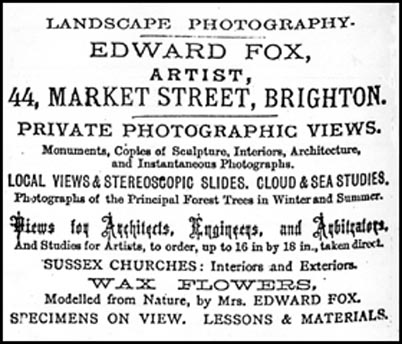
[ABOVE LEFT ]Advertisement
for Edward Fox's Landscape Photography and Mrs Fox's Wax Flowers
at 44 Market Street from Page's Brighton
Directory of 1879. In 1875,Miss Sarah Weekes was advertising
her "Wax Flowers from Nature" from Edward Fox's premises
at 44 Market Street. Later, in October 1875, Miss Weekes became
Mrs Edward Fox.
|
1
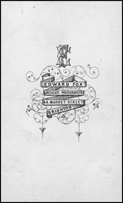
[ABOVE RIGHT]Edward
Fox 's trade plate as it appears on the back of one of his
carte de visite views.
|
It
appears that no children were born of the union between Edward Fox
and his wife Sarah. However, it seems Mr and Mrs Fox became the surrogate
parents of three young men. By the time of the 1881 Census, Edward
and Sarah Fox's house in Market Street was also the home of three
brothers, Charles, Algernon and Herbert Attree. The Attree brothers
were the sons of Charles Attree, an auctioneer of Clarence Square,
Brighton. Charles Attree, who was the husband of Sarah Fox's sister
Jane, had died before the birth of their youngest son Herbert Charles
Attree, who was baptised on 18th March 1863. The two older Attree
brothers both give their occupation as 'clerk' in the 1881 Census,
but the teenage Herbert C. Attree is described as a photographer
and was, presumably, acting as an assistant to Edward Fox.
By
the 1870s, Edward Fox was well known for his views of Brighton landmarks
and notable Sussex buildings. He had produced a series of photographs
featuring the interiors and exteriors of Sussex Churches and a number
had been issued in the carte-de-visite format. Private commissions
had taken him across the county to record grand residences and country
houses. Significantly, Edward Fox placed advertisements for his landscape
photography in newspapers that were circulated in the outer reaches
of the County.
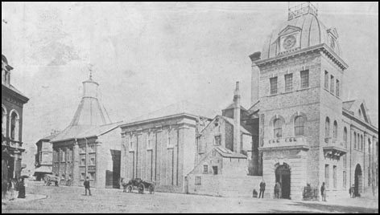
Preston Circus, Brighton showing
the buildings of Longhurst's Amber Ale Brewery by Edward Fox (1879).The
dark building on the far left of the picture is the Stanford Arms
Inn. The Duke of York Cinema and the Fire Station now occupy the site
of the brewery.
Edward
Fox may have considered himself an artist in photography, but he was
gaining a reputation as a reliable recorder of monuments and buildings.
Fox's advertisements in the 1870s offer evidence that his photographs
were providing "Views for Architects, Engineers, and Arbitrators."
It is therefore not surprising that when photographs were gathered
together to form "The Photographic Record and Survey of Sussex",
Edward Fox's photographs of Brighton and the surrounding Sussex countryside
formed an important part of the collection.
In
the late 1870s, Edward Fox was providing photographic prints of his
views measuring up to 16 inches by 18 inches. In an advertisement
which appeared in Page's Brighton Directory of 1885, Fox announced
that his 'speciality' was "Landscape & Architectural Photographs
taken direct on plates up to 16 inches to 18 inches."
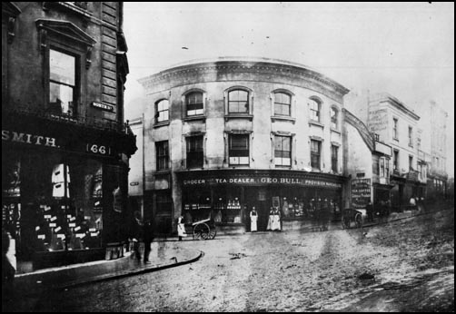
North Street at the junction
with West Street by Edward Fox (1875).This view and a number of other
pictures by Edward Fox formed part of The Photographic Record and
Survey of Sussex.The rounded building in the centre was demolished
in 1925.
Edward
Fox's last years as a Photographer
In
June 1892, it was reported that Edward Fox had sold his photography
studio at 44 Market Street. It had been Edward's home since the mid
1840s and he had been producing photographs from this address for
over 50 years. By 1895, 44 Market Sreet was occupied by J.Slatter,
ironmonger. In Page's Directory for 1895, a Mr Fox - 'artist', is
recorded at 15 Havelock Road, Brighton. In Pike's 1896 Directory,
Edward Fox of 15, Havelock Road is listed under Photographers in the
Trades and Professions section. According to Pike's Directory, Edward
Fox continued as a photographer at 15 Havelock Road for a few years,
but in the 1899 edition, Fox disappears from the list of photographers
working in Brighton. Kelly's Directory of 1899 lists Edward Fox as
an artist living at 15 Havelock Road in the general directory, but
he is not entered under photographers in the trade section. There
is no trace of Edward Fox, or his wife Sarah, in the 1901 Census.
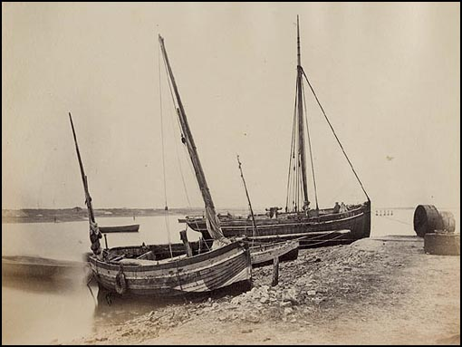
Fishing Boats by Edward Fox
[COURTESY OF STEVEN EVANS]
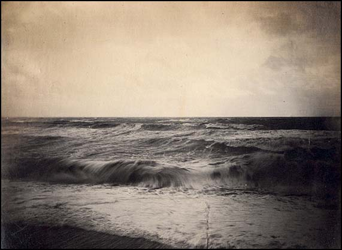
Study of Sea Waves.Attributed
to Edward Fox [COURTESY OF STEVEN EVANS]